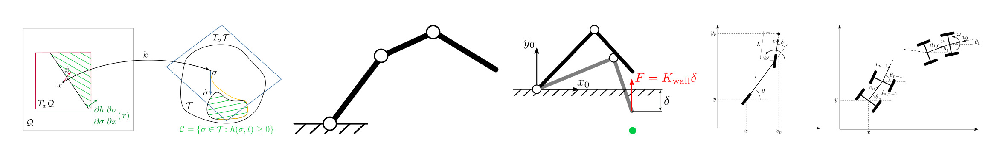

Optimization-based Control of Robotic Systems
Minicourse at the Escola de Matemática Aplicada, Fundação Getulio Vargas (FGV EMAp), Rio de Janeiro, Brazil
Course content and objectives
This course will introduce students to modern optimization-based methods for robot control. Robot models will be described first. Then, unconstrained and constrained optimization problems will be introduced. The special case of convex optimization will be presented and used to formulate stabilizing and safety-ensuring controllers for robotic systems. Finally, two lectures will be dedicated to the optimization-based control of manipulators and mobile robots, respectively.By the end of the course, students should be able to formulate and solve robot control problems arising in their research projects by means of optimization-based control techniques.
Dates
January 16–27, 2023 (2 weeks)Course schedule
| Date | Location | Subject | Reading | Recordings |
|---|---|---|---|---|
| Mon, Jan 16 | Auditório 317 | Introduction to robot control | Course notes, [1] | |
| Wed, Jan 18 | Auditório 317 | Unconstrained, constrained, and convex optimization problems | Course notes, [2] | YouTube link |
| Mon, Jan 23 | Auditório 317 | Min-norm controllers I: Stability and control Lyapunov functions | Course notes, [3,4] | YouTube link |
| Wed, Jan 25 | Auditório 317 | Min-norm controllers II: Invariance and control barrier functions | Course notes, [5] | YouTube link |
| Thu, Jan 26 | Auditório 1013 | Combining stability-like and invariance-like tasks | Course notes | YouTube link |
| Fri, Jan 27 | Auditório 317 | Robotic applications of optimization-based control | Slides | YouTube link |
Reading
The PDF of the course notes is available here.
- Richard M. Murray, Zexiang Li, and S. Shankar Sastry. A Mathematical Introduction to Robotic Manipulation. CRC Press, 1994
- Stephen Boyd and Lieven Vandenberghe, Convex optimization, Cambridge University Press, 2004
- Zvi Artstein. Stabilization with relaxed controls. Nonlinear Analysis: Theory, Methods & Applications, 7(11):1163-1173, 1983.
- Eduardo D Sontag. A 'universal' construction of Artstein's theorem on nonlinear stabilization. Systems & control letters, 13(2):117-123, 1989.
- Aaron D Ames, Samuel Coogan, Magnus Egerstedt, Gennaro Notomista, Koushil Sreenath, and Paulo Tabuada. Control barrier functions: Theory and applications. In 2019 18th European control conference (ECC), pages 3420-3431. IEEE, 2019.